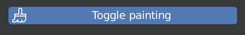
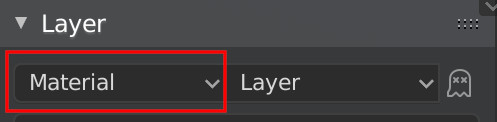
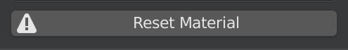
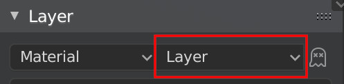
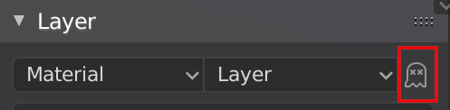
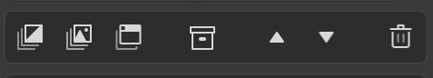
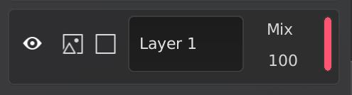
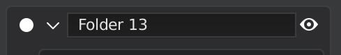

Usage
Both the layer stack and the layer settings live in this panel. The advantage is, that you can close it at all times, just by pressing N .
Shortcuts
You can also use shortcuts to open these panels, which allows you to have the N-Panel closed at all times. These shortcuts are:
- Layer Stack: CTRL + RIGHTMOUSE
- Layer Settings: RIGHTMOUSE
Toggle painting

This button is only a temporary solution. It can be used to exit out of texture painting mode when Layer Painter automatically switches to it. It also prevents the automatic toggling of texture painting mode.
Once this bug is resolved, this will be removed. A Layer Painter active tool will be added to texture painting mode, which can then show the Layer Painter settings.
Layer Stack
The layer stack has the dropdowns for material and channel selection as well as the layer operators. It also has all the layers of your materials.
Material Dropdown

This dropdown allows you to select the material you're currently editing.
Tip
If there are any issues with your layer stack, try reselecting the active material. This will reload the layers and might fix issues.
Reset Material

This button will show up if the addon wasn't able to recognize the node layout of your material. This shouldn't appear when you don't edit the material by hand, except for once when you haven't done anything with the material.
The button will remove all nodes in the selected material and set up the nodes required for the addon.
Channel Dropdown

This is the channel you are currently editing. "Layer" will affect the entire layer, while the other channels will just change the current channel. This dropdown will have an affect on the following things:
- Layer Stack: All channels can have different opacities and channels can be hidden invdividually. The individual channels also have a blending mode, "Layer" doesn't have that.
- Masks: If you add a mask, it will be added for the selected channel. This means that you can have different masks for different channels.
Channel Preview

This adds an emmission node inbetween the active channel and the output node. It's a way to preview the raw color of the channel. This setting won't work if "Layer" is selected.
Layer operators

These operators all depend on which layer is selected!
The operators function in order of appearance:
- Add fill layer: This will add a fill layer above the selected layer
- Add paint layer: This will add a paint layer above the selected layer
- Add node group layer: This will add a node group layer above the selected layer
- Add group layer: This will add a group above the selected layer
- Move layer up: This will move the selected layer up in the layer stack
- Move layer down: This will move the selected layer down in the layer stack
- Delete layer: This will delete the selected layer
When you have no layers in your material, there will be a button to copy an existing material. This will add the layers from the material selected in the poup to your active material.
Layers

A single layer looks like this. The elements in order of appearance:
- Visibility: This changes the visibility of the selected channel
- Layer selection: This will select this layer and display the layers settings in the settings panel
- Mask selection: This will select this layer and display the mask settings in the settings panel
- Layer name: This changes the name of this layer. There are a few names which are not allowed. If you enter one of them, the layers name will be changed to "Unnamed"
- Blending mode: This setting does not exist for "Layer". If another channel is selected, this will change the blending mode of this channel
- Opacity: This changes the opacity of the selected channel or the layer. You can enter a value or drag your mouse
- Layer tag: This is a color tag for the layer which makes it easier to identifie in the layer panel and in the node editor. The random color setting can be turned off
Groups

A group layer looks like this. The elements in order of appearance:
- Selection: This selects this group
- Expand: This expands the group and shows the layers inside it
- Name: The name of the group
- Visibility: This sets the visibility of the group and the layers inside it
Layer settings
If you have a layer selected, the settings for this layer will be shown here. If you have a layers mask selected, the settings for that mask will be shown here.
The layer settings are specific for the type of the selected layer.
You can see what the mask settings look like here.